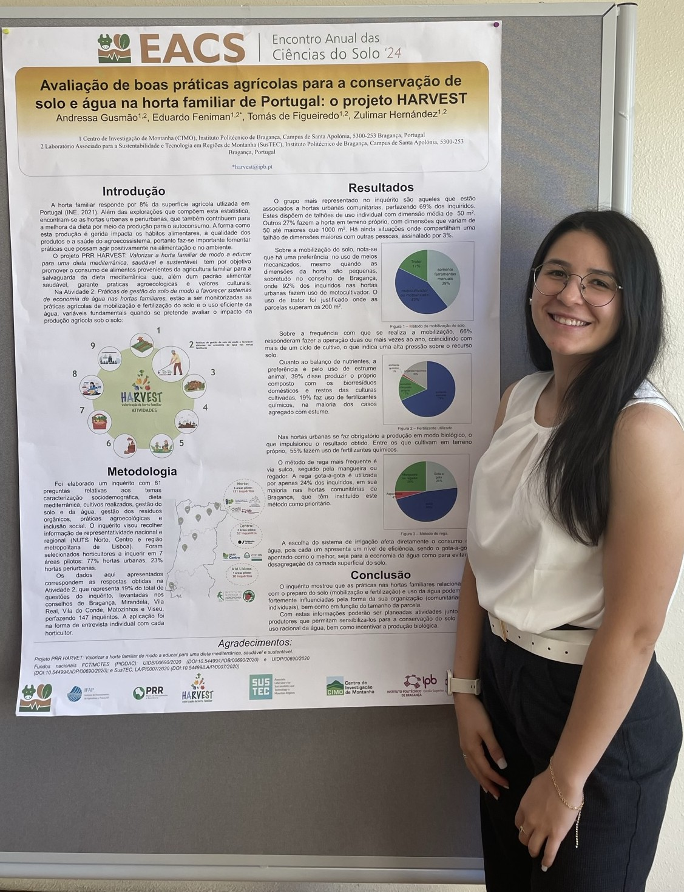

MSc in Environmental Technology
Instituto Politécnico de Bragança, Portugal
Data Analyst & Environmental Engineer
Environmental engineering, scientific research and data — one path that keeps growing.
Introduction
Brazilian, 25 years old, Andressa has built her academic and professional trajectory around data analysis. During her undergraduate studies, she completed three scientific initiation projects, which gave her a strong foundation in data handling, Microsoft Office tools, and statistical procedures. Her mandatory internship and later position in an environmental consultancy further developed her skills in technical reporting, data visualization, and geospatial data analysis.
She moved to Portugal to pursue a master’s degree at the Polytechnic Institute of Bragança (IPB), where she strengthened her skills in data processing, interpretation, and integration within a scientific research context. After completing her degree, she remained in Portugal and joined two funded research projects between 2023 and 2025, while also collaborating voluntarily in two others. During this period, she worked with environmental monitoring datasets, statistical modelling, geospatial analysis, and both greenhouse and laboratory studies — consistently focusing on producing clear, reliable, and data-driven results.
Her latest research fellowship ended in November 2025, and since then she has expanded her skill set beyond environmental sciences. She is currently enrolled in a Technical Course in Digital Marketing at IEFP and a Programming Course at Technisign, strengthening her ability to combine analytical thinking with digital strategy and automation. This multidisciplinary path reflects her goal of becoming a versatile professional capable of working across research, technology, and industry environments.
Career
If you want to explore the projects, skills and responsibilities she has taken on in each stage of her career, you can access her detailed professional journey and CVs below.

Education
Instituto Politécnico de Bragança, Portugal
Universidade Tecnológica Federal do Paraná, Brazil
Back
Projects, skills, outreach and contact are all on the main page.